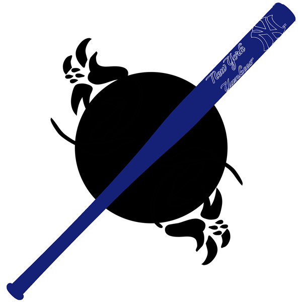

My first project. The goal of this design was to introduce myself as a person. I added multiple png's to get that goal across.

"Vector Image"
New York Yankee's Baseball in vector format.
"Audio Project"
I created a audio scenario of someone studying for a short period of time.
"Random Objects Gif"
The assignment was to create a gif of a humuorous situation. I thought what if instead of rain falling from clouds, random objects fell down from them instead?
"10 Second Animation"
I created a 10 second animation video using one of my favorite quotes "Sky Is The Limit." You can achieve anything in life.
"p5.js"
I created a sketch of a duck using p5.js, inspired by the Disney character "Donald Duck."
My goal was to create my own unique version of him, carefully selecting colors that matched the character's iconic look.
The most challenging aspect was capturing the essence of a duck while adding my personal touch to the design.